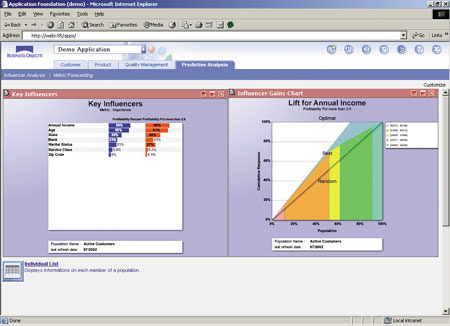
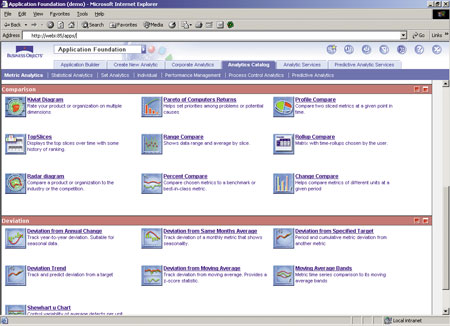

Максим Львов,
менеджер по маркетингу компании "Терн"
maxim.lvov@tern.ru
Автоматизация операционных процессов на предприятиях начиналась с внедрения разрозненных приложений в рамках рабочих групп и отделов. Сейчас во многих компаниях эта деятельность превращается в целенаправленный процесс, в ходе которого внедряются интегрированные системы. Приложения автоматизируют не отдельные конкретные операции (к примеру, выписку счетов), а целые технологические процессы.
Аналогичные тенденции наблюдаются и в сфере автоматизации анализа деятельности и принятия управленческих решений. Если раньше отдельные категории пользователей решали свои частные задачи, то сейчас руководителей компаний все чаще интересуют возможности решения комплексных аналитических задач. Основной же способ их решения - использование аналитических приложений.
В этой статье мы рассмотрим программные средства для построения корпоративных аналитических приложений и продемонстрируем, какие преимущества дает сочетание двух подходов: покупки готовых и разработки собственных приложений - на примере решений компании Business Objects.
Задача выбора
Многие компании сейчас решают задачу объединения фрагментов аналитической системы и расширения областей анализа. В этих компаниях уже существует некоторая аналитическая инфраструктура, сочетающая в себе различные инструменты и методологии. Внедренные средства решают конкретные задачи бизнеса и аккумулируют опыт разработчиков и поставщиков. Очевидно, что аналитические системы могут предоставить компании значительные преимущества, поэтому важно разумно выбрать решения, дающие наиболее широкие возможности в области анализа. Многие компании осознают, что необходимо иметь определенную стратегию развития информационно-аналитической инфраструктуры, вместо того чтобы бессистемно развивать отдельные приложения. При этом одним из важных требований к программным средствам остается их соответствие выбранной архитектуре.
Организация, определяя стратегию создания корпоративной информационно-аналитической системы, имеет возможность выбрать единственное решение или сочетание нескольких возможных вариантов. Это может быть, во-первых, приобретение набора аналитических инструментов, во-вторых, покупка интегрированной среды разработки аналитических приложений и, в-третьих, внедрение готовых аналитических приложений.
Поскольку речь идет о достаточно новом направлении в области корпоративных информационно-аналитических систем - аналитических приложениях, определимся с терминологией. Под аналитикой мы понимаем определенную технику анализа, разработанную для ответа на специфические для предметной области вопросы. Результат ее применения может быть облечен в разные формы - электронный документ (например, отчет), направленное по электронной почте предупреждение (alert), некоторое автоматизированное действие (выдача сообщения для операционной системы). Аналитика, как правило, опирается на определенную технологию, - в основе которой лежит, например, теория множеств, статистические функции и операции, методы прогнозирования (интерактивный анализ временных рядов и т. п.) - и может использоваться в целом ряде аналитических шаблонов (аналитик).
Аналитическое приложение - это программный продукт, предназначенный для решения специфических бизнес-задач определенным кругом пользователей. Этот продукт может включать в себя несколько аналитик. Каждое аналитическое приложение ориентировано на определенную область (например, управление взаимоотношениями с заказчиками) и имеет необходимую функциональность для анализа и представления информации.
Плюсы и минусы
Оценивая предложения различных поставщиков аналитических средств, компании уделяют большое внимание тому, насколько это ПО удовлетворяет требованию соответствия между готовностью бизнеса к внедрению подобных решений и технологической сложностью программных средств. В ряде случаев организации прибегают к услугам сторонних консультантов при построении моделей данных, разработке процедур трансформации, проведении вычислений и подготовке отчетности. Они также склонны использовать решения, учитывающие опыт разработчиков и мировую практику в данной области анализа.
Оба подхода - и покупка инструментальных средств для разработки собственных решений, и приобретение готовых аналитических приложений - имеют свои плюсы и минусы. С одной стороны, аналитические инструменты дают определенные преимущества при создании отчетов любой формы и анализе ключевых показателей деятельности (key performance indicator, KPI). Применение интегрированной среды разработки приложений позволяет сократить риски при интеграции различных инструментов. Внедрение готовых аналитических приложений дает возможность заимствования методологий и опыта разработчиков.
С другой стороны, наборы инструментальных средств не ориентированы на решение конкретных задач анализа. Интегрированные среды разработки приложений могут оказаться привязанными к определенным методикам и технологиям проведения анализа, у аналитических приложений может оказаться недостаточно функциональности, чтобы соответствовать требованиям компании в конкретной области анализа.
Каждый вид программных средств развивается в направлении увеличения функциональности и удобства применения. Средства бизнес-аналитики (Business Intelligence, BI) стали исключительно просты в использовании и управлении, они отвечают потребностям в анализе разнообразных групп пользователей. Интегрированные среды разработки приложений включают все большее число аналитических механизмов и технологий. Поставщики аналитических приложений значительно продвинулись в использовании накопленного опыта и лучших мировых практик. Расширяются модели данных и создаются функциональные интерфейсы приложений для анализа различных областей, таких, как управление взаимоотношениями с заказчиками (CRM) и цепочками поставок (SCM).
Однако отчеты все еще отражают только часть информации, среды разработки приложений служат только для решения технических/интеграционных задач, аналитические приложения теряют свою привлекательность, как только организация использует все лучшее из того, что они могут предложить.
Сбалансированное решение
Компания Business Objects предлагает сочетать преимущества обоих подходов и видов программных средств. В набор аналитических приложений BusinessObjects Analytics входит пять аналитических приложений, предназначенных для анализа различных областей деятельности компании (рис. 1). Customer Intelligence решает задачи аналитического CRM, Product and Service Intelligence позволяет анализировать производство товаров и качество технической поддержки, Supply Chain Intelligence обеспечивает управление цепочками поставок, HR Intelligence анализирует кадровые ресурсы компании и, наконец, Finance Intelligence позволяет оценивать и контролировать финансовые результаты ее деятельности. Эти приложения, в свою очередь, состоят из модулей, решающих специфические задачи внутри каждой области анализа (табл. 1).
|  |
| Рис. 1. Анализ влияния ключевых факторов на покупки клиентов и прогнозирование прибыли при помощи приложений BusinessObjects Analytics.
|
Таблица 1. Структура и назначение аналитических приложений BusinessObjects Analytics
| Приложение | Модуль | Назначение |
| Customer Intelligence | Sales Analytics | Оптимизация процесса прямых продаж и продаж через каналы дистрибуции, анализ прибыльности |
| Customer Analytics | Анализ клиентской базы и увеличение продолжительности взаимодействия с клиентами | |
| Campaign Analytics | Повышение эффективности маркетинговых кампаний | |
| Contact Center Analytics | Повышение эффективности работы call-центров | |
| Product and Service Intelligence | Product Performance Analytics | Увеличение прибыльности продуктов и доли рынка |
| Product Management Analytics | Увеличение возможностей продаж дополнительных товаров и услуг | |
| Supply Chain Intelligence | Plan Analytics | Улучшение баланса между плановыми и фактическими показателями |
| Source Analytics | Оптимизация процессов закупки сырья и комплектующих | |
| Make Analytics | Повышение эффективности производственного процесса | |
| Deliver Analytics | Оптимизация процессов отгрузки и доставки товаров | |
| Return Analytics | Управление процессом минимизации возврата товаров | |
| HR Intelligence | Workforce Analytics | Повышение эффективности управления служащими, снижение текучести кадров |
| Finance Intelligence | Revenue Cycle Analytics | Анализ оборачиваемости денежных средств |
Эти модули используют единый набор средств разработки и трансформации данных, общие модели данных, вычисления и определения. Кроме того, все приложения используют два общих элемента. Первый из них, Business Objects 2000, - это набор ПО для доступа к данным и создания многомерной отчетности для пользователей, инструментов разработки и администрирования. Второй, BusinessObjects Application Foundation, - это набор различных аналитических механизмов (engines), компонентов для создания информационных панелей и каталог шаблонов, содержащих модели данных и вычисления.
Платформа Business Intelligence
Набор инструментов BusinessObjects 2000 используется для построения и сопровождения отчетов и аналитик. Он состоит из средств разработки и администрирования (Designer, Supervisor, Auditor), средств доступа к данным и формирования отчетности для пользователей (BusinessObjects, WebIntelligence) и средств доставки информации (Broadcast Agent, Publisher).
Application Foundation служит связующим звеном между набором средств бизнес-анализа BusinessObjects 2000 и аналитическими приложениями. В него входят модульные компоненты, которые разработчики приложений могут комбинировать по своему усмотрению, расширяя возможности аналитических приложений Business Objects или создавая новые приложения. Принципы работы с Application Foundation скорее напоминают производственный процесс создания продуктов из общих компоновочных элементов, нежели разработку продукта с нуля.
В состав Application Foundation входят пять встроенных механизмов и ассоциированных с ними компонентов.
Sets engine - встроенный механизм сегментации и операций со множествами. Полученные сегменты потом используются для анализа поведения заказчиков и поставщиков, управления эффективностью продвижения продуктов, анализа взаимодействия.
Metrics engine - встроенный механизм, позволяющий отслеживать изменения ключевых показателей деятельности во времени. Анализ может проводиться на детализированном или агрегированном уровне представления данных. Это помогает пользователям понять, как их бизнес меняется во времени.
Rules engine - встроенный механизм, используемый для активного мониторинга деятельности компании и выдачи предупреждений на основе условий, заданных пользователем. Последние могут отслеживать изменения и управлять показателями, наиболее важными для бизнеса.
Predictive analysis engine - встроенный механизм, служащий для выявления ключевых факторов и прогнозирования изменения факторов, влияющих на определенные действия (например, уход клиента или совершение им повторной покупки).
Statistical Process Control engine - встроенный механизм, используемый для поддержки и развития инициатив управления качеством (таких, как Total Quality Management (TQM) и Six Sigma) через стандартные контрольные диаграммы, включающие средства мониторинга качества.
Analytics Catalog - библиотека из примерно 70 шаблонов аналитик, заранее подготовленное множество моделей данных и вычислений, общих для различных областей анализа (например, прибыль или оборачиваемость товарных запасов).
Dashboard components - компоненты пользовательского интерфейса, предназначенные для визуализации результатов анализа (диаграммы, списки, шкалы).
Application Builder - средство, ориентированное на программистов или технически подготовленных бизнес-пользователей, при помощи которого они могут создавать собственные аналитические приложения.
Общие модели данных
BusinessObjects Application Foundation - это не только объединяющий механизм внутри набора приложений BusinessObjects. Корпоративная модель данных, предлагаемая Business Objects, позволяет организациям проводить анализ как в определенной области, так и на общекорпоративном уровне. Каждое аналитическое приложение использует свою витрину данных, разработанную для конкретной области, - это может быть, например, витрина "заказчики" или "продукты".
Различные витрины данных используют общие определения. "Заказчик" для подразделения маркетинга означает то же самое, что и для служащих отдела логистики. Более того, каждая витрина данных основана на структуре данных, построенной по схеме "звезда", которая интегрируется со схемой других витрин BusinessObjects Analytics.
Используя общие определения, элементы данных и аналитические механизмы, пользователи в компании могут вычислять общекорпоративные метрики, например, анализировать прибыльность клиентов, вычитая затраты на прямые продажи, маркетинг, производство и поддержку товаров из доходов, полученных от продажи и технической поддержки.
Аналитическая энциклопедия
В отсутствие определенных знаний и навыков использования аналитических приложений отдача от применения новых для компании технологий может оказаться низкой. Сегодняшние условия ведения бизнеса часто требуют от служащих выполнения новых функций, при том что им предоставляется минимальное обучение. Для того, чтобы пользователи могли быстро освоить принципы работы программных средств и использовать функциональные возможности по максимуму, в состав BusinessObjects Analytics включена аналитическая энциклопедия. Она содержит интерактивный гид по аналитическим приложениям, словарь терминов, поисковую систему и систему "управляемого" анализа (рис. 2).
|  |
| Рис. 2. Аналитическая энциклопедия, входящая в состав BusinessObjects Analytics, предоставляет справочную информацию о применении различных аналитик.
|
Пользователи могут проводить поиск в словаре терминов по определенному слову или формуле или использовать его как оперативное руководство. Словарь выдает определения, которые описывают назначения метрик, поясняют, на какие бизнес-вопросы они отвечают и как могут использоваться.
Система "управляемого" анализа - это своего рода учебное пособие, проводящее пользователя через последовательность шагов, которые необходимы при анализе конкретной проблемы.
***
Итак, с нашей точки зрения, при выборе решений для построения корпоративных информационно-аналитических систем оптимален комбинированный подход. Он позволяет сочетать различные программные решения и использовать преимущества как покупки готового решения, так и построения своих собственных приложений. С одной стороны, компания получает решение, в котором использованы знания разработчиков и лучший мировой опыт в области анализа деятельности. С другой - в ее распоряжении оказываются наборы инструментов и среда разработки приложений, обеспечивающие настройку решения под специфику компании и возможность использования существующих методик анализа и управления в собственных приложениях.
Планы развития продуктов Business ObjectsВ середине декабря 2003 г. французская компания Business Objects (http://www.businessobjects.com), один из лидеров рынка систем BI, объявила о завершении процедуры приобретения другого известного игрока рынка BI, компании Crystal Reports. А в начале января нынешнего года Business Objects представила набор Crystal Suite 10 уже как собственный продукт и опубликовала планы интеграции продуктов двух компаний. В основу объединения семейств продуктов Crystal Reports и Business Objects положены следующие принципы:
Сама интеграция двух линий продуктов будет проходить в три стадии. 1. Интеграция на уровне единого пакета. Она будет реализована в виде портала с общим набором функций Web Services API, а также метаданных Business Objects, доступных со стороны. Такой интеграционный пакет появится на рынке во II квартале нынешнего года. 2. Интеграция на уровне платформы. Здесь имеется в виду наличие единой для обеих групп продуктов инфраструктуры, включая общие средства администрирования. Этот этап планируется реализовать к концу 2004 г. 3. Полная интеграция. Подразумевает объединение функциональности всех нынешних продуктов в виде единой прикладной платформы, которая должна появиться в 2005 г. Выпущенный в начале января набор Crystal Suite 10 объединяет три ведущих продукта бывшей Crystal Reports: Crystal Enterprise - инструментальную платформу для создания гибких, масштабируемых приложений для составления отчетов и анализа данных уровня предприятий, а также два "коробочных" решения - Crystal Analysis (интеграция и анализ данных) и Crystal Reports (формирование отчетов). Наибольшие перспективы в новом наборе, наверное, имеет Crystal Reports 10, одно из популярнейших в мире средств формирования отчетов (можно уверенно предположить, что именно этот продукт наилучшим образом дополнит функциональность решений Business Objects). Продукт содержит целый ряд новых по сравнению с версией 9 функций, обеспечивающих более высокую производительность и простоту использования различных компонентов в процессе работы с отчетами. В частности, в ходе проектирования отчетов теперь можно копировать наборы параметров форматирования из одного объекта в другой с помощью мыши, использовать новые виды воронкообразных (funnel) графиков, создавать асимметричные отчеты (скрывая в случае необходимости отдельные размерности OLAP-кубов), применять более гибкие средства взаимодействия с репозиториями повторно используемых компонентов. Расширены также возможности визуализации и обмена отчетами: экспорт законченных отчетов в Microsoft Excel, распечатка из утилиты просмотра DHTML, управление печатью на сервере с любой рабочей станции и т. п. Большое число новшеств связано со средствами встроенного применения Crystal Reports в бизнес-приложениях с использованием технологий Java, .NET и COM. Crystal Reports 10 представлен на рынке четырьмя различными редакциями (табл. 2), что позволяет применять его широкому кругу специалистов: пользователям, разработчикам приложений и ИТ-профессионалам. Редакция Standard Edition предназначена для выполнения основных функций создания отчетов на базе источников данных в рамках автономных ПК. Professional Edition позволяет создавать и распространять отчеты, формируемые на базе самых разнообразных источников данных, а также доставлять отчеты через Web для рабочих групп. Developer Edition предназначена для интеграции средств просмотра, печати и распространения отчетов в бизнес-приложения. Advanced Developer Edition представляет собой набор средств Web-разработки и развертывания специализированных приложений управления отчетами. Таблица 2. Состав редакций Crystal Reports 10
|
||||||||||||||||||||||||||||||||||||||||||||||||||||||||||||||||||||||||||||||||||||||||||||||||||||